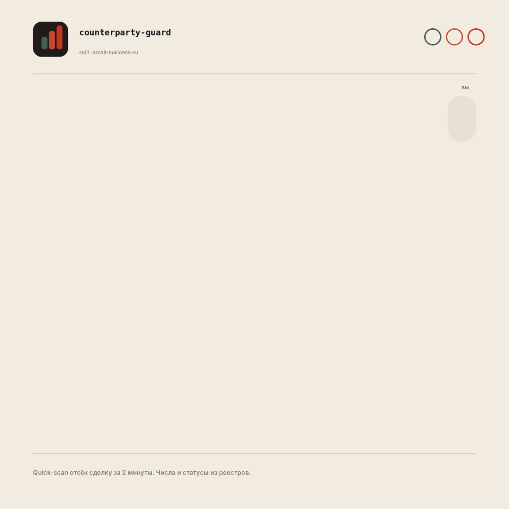
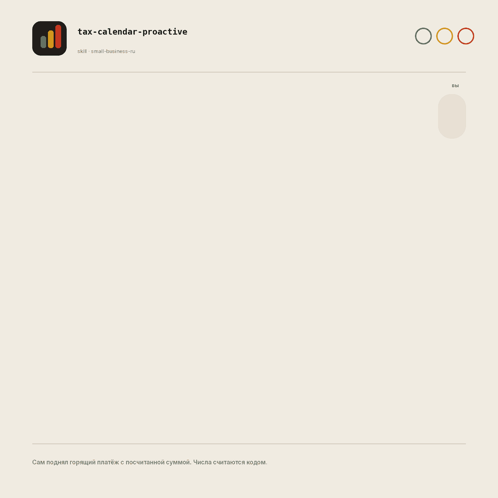

AI, который не врёт цифрами
34 открытых скилла для операционки малого бизнеса в РФ. Поставьте сами за минуту, скажите обычными словами что нужно: числа посчитает кодом, контрагента проверит по реальным реестрам.
Сколько у неё судебных дел?
Прогнали одну компанию через 5 бесплатных агрегаторов. Число судов разошлось почти втрое (методики подсчёта разные), при этом выручка и исполнительные производства совпали у всех. Цифры округлены, проверяйте на своих контрагентах.
Факт это то, что совпало у трёх. Расхождение это флаг, а не повод выбрать цифру покрасивее.
Почему это не обёртка вокруг чата
«Внедрите AI» обычно значит чат, который уверенно врёт цифрами. Здесь три принципа против этого.
Числа считаются кодом
Прогноз денег, маржа, налоги УСН считаются скриптами, а не «прикидываются» моделью. Калькуляторы сверены на контрольных точках.
Данные из реальных реестров
Контрагент проверяется по ЕГРЮЛ, ФССП, картотеке арбитража, ЕФРСБ, ГИР БО, а не по выдумке. Каждый факт с источником и датой.
«Не проверено» вместо выдумки
Где данных нет, инструмент честно пишет «не проверено». Светофор это оценка, а не приговор; решение всегда за вами.
Три скилла, которых нет больше нигде
База это локализация открытого пака Anthropic. А эти три мы собрали с нуля под российские реалии. Это лицо продукта.
counterparty-guard
Проверка контрагента по ИНН до сделки. Сводит ЕГРЮЛ, ФССП, суды, банкротства, финансы в светофор риска за минуты.
tax-calendar-proactive
Налоговый штурман УСН. Сам, без вопроса, показывает что горит, когда срок и сколько примерно платить. Суммы считает кодом.
cross-source-verify
Движок круговой сверки: сводит данные из нескольких источников с оценкой уверенности и явным показом расхождений.


Как пользоваться: скажите обычными словами
Запоминать команды не нужно. Опишите задачу человеческим языком, роутер сам подберёт нужный скилл и спросит, чего не хватает.
Проверить контрагента
проверь поставщика по ИНН 7700000000 перед предоплатой надёжна ли эта компания, дать отсрочку?Налоги и сроки
что у меня горит по налогам в этом квартале сколько отложить на аванс по УСНДеньги и дебиторка
построй прогноз денежного потока на 3 месяца кто из клиентов должен и сколько просроченоНе уверены, с чего начать
настрой меня что ты умеешь для моего бизнесаСовет: первым делом скажите «настрой меня» — скилл задаст пару вопросов про ваш бизнес (форма, режим налогообложения, чем торгуете) и дальше будет учитывать их в ответах. Где данных нет, инструмент попросит выгрузку или напишет «не проверено».
И ещё 31 скилл под операционку
Покрыт владелец-универсал: один человек за финдира, продажи, кадры и юриста. Всё связывает роутер, понимающий обычную речь.
Установка за минуту
Родной формат — Claude Code и Cowork. Скопируйте две строки в Claude Code, дальше говорите словами. Логика переносима и под другие стеки.
/plugin marketplace add ilyautov/small-business-ru
/plugin install small-business-ru@small-business-ru
# 2. затем скажите обычными словами:
«настрой меня»
Под другие стеки — готовые обёртки в папке adapters/ репозитория (alpha). Тело логики одно, меняется только способ установки.
Это всё в опен-сорсе. Берите, форкайте, улучшайте.
Первая цель — открытый рабочий инструмент для малого бизнеса РФ: 34 скилла, адаптеры под 5 стеков и скрипты под Apache-2.0. Поставьте звезду, чтобы проект нашли другие. Нашли косяк или есть идея — заводите issue, разберём.